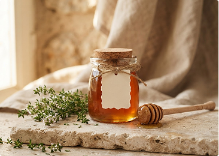
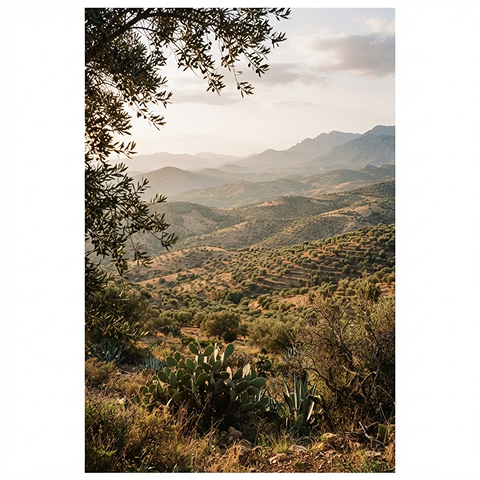
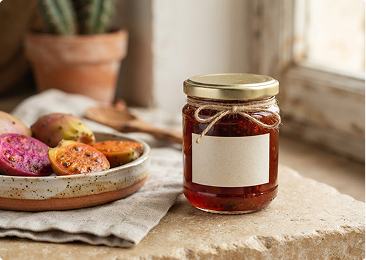

250 g · Récolte artisanale
Miel de thym
60 DHUn miel doré et généreux, aux notes florales du Rif.
Du Rif, avec le cœur
Au nord du Maroc, 25 femmes font vivre une coopérative et un savoir-faire transmis avec générosité.
Récolté et préparé dans la région de Nador

Une coopérative, une histoire
De la terre à votre table, le meilleur de notre région.
Miel de thym, huile d'olive et confiture de figue de barbarie : des produits sincères, façonnés ensemble au rythme des saisons.
Nos incontournables

250 g · Récolte artisanale
Un miel doré et généreux, aux notes florales du Rif.

500 ml · Première pression
Une huile fruitée pour accompagner vos plats et salades.

250 g · Fruits du soleil
La douceur délicate du fruit, préparée en petite série.
Ensemble, depuis le Rif
Thimdrine, c'est une aventure collective portée par des femmes qui prennent soin de leur terroir et partagent ses richesses. Chaque produit raconte un peu de cette histoire.
Rencontrer la coopérative